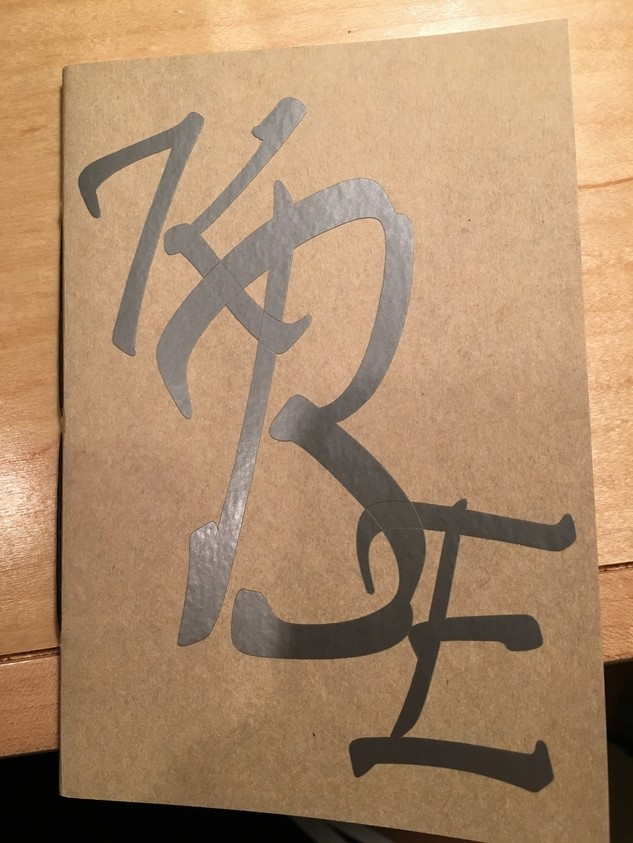
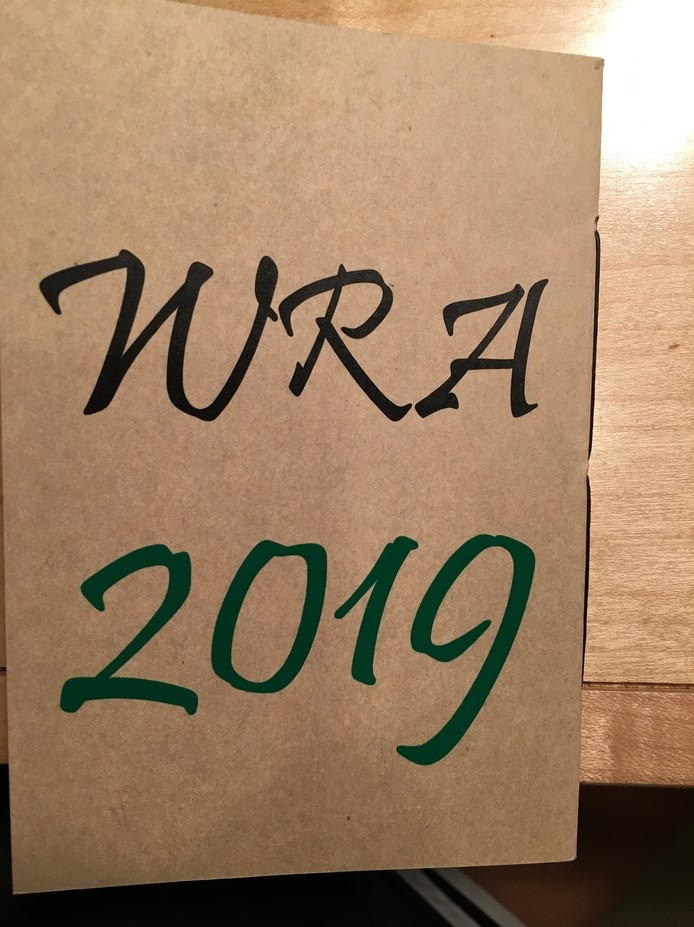
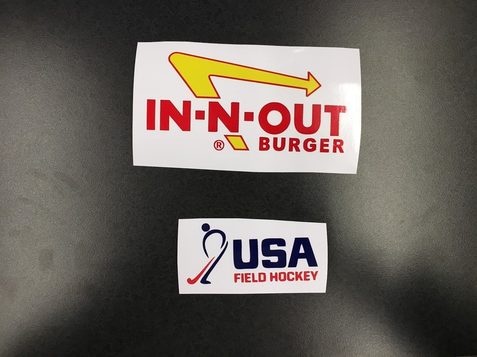
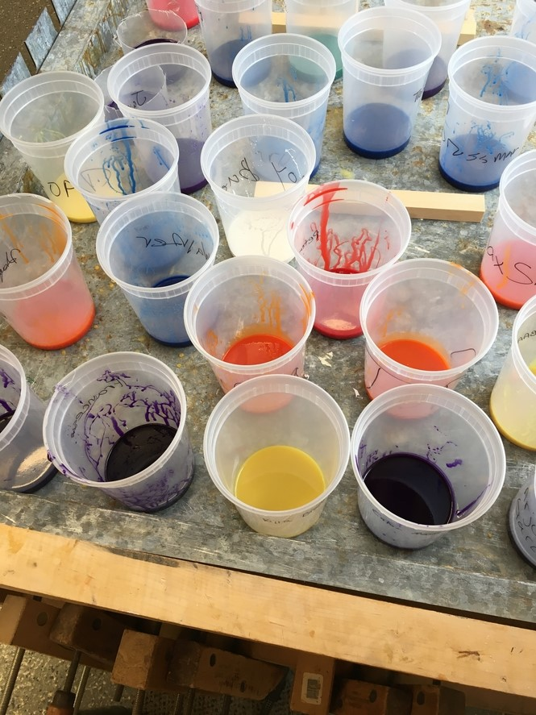
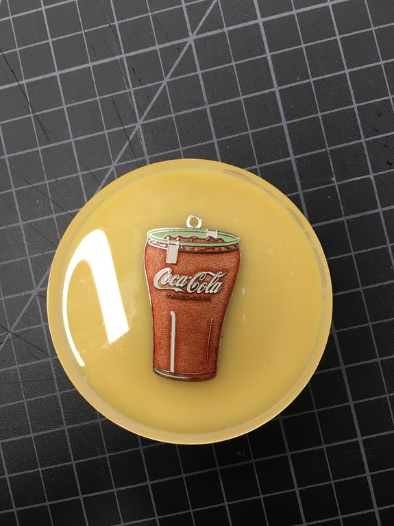
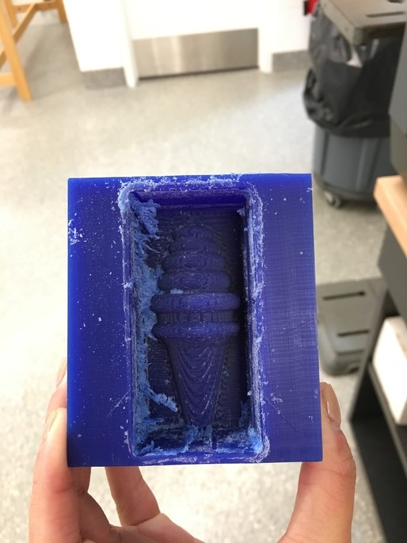

Stickers, Coaster, and Chocolate Mold
Project Description:
For this rotation, I designed five stickers. Three of them were one solid color and two of them were multi-colored.
I designed all five in Corel Draw. I made my initials for the cover of my book, in silver. On the back I put WRA and 2019, the
year I graduate. These designs were easy to make. The Roland GS-24 was simple to use also. The difficult part was adjusting the rubber
rollers. I am familiar with this type of machine, becuase my mom uses a Cricut for her scrapbooking. I liked using the Roland 540i printer
becuase you can print multiple colors, on one layer. I chose to use the In-N-Out Burger logo, beucase it is one of my favorite places to
go when I visit my grandparents. I also printed the USA Field Hockey logo. The steps for preping the sticker was simple, I put the logo in,
and used the bitmap tool. Then I ungrouped the objects and contoured around the shape, so the 540i printer would cut around it. The first
time I designed an American Flag, but I did not put a contour around it, so I used an exacto knife to cut it out.



It took several class periods to make the coaster. I poured a mixture of yellow dye and urethane to create the rubber bottom of my
coaster. I then put a Coco-Cola keychain ontop of the base and poured epoxy over, so it would be seethrough.


Another project I made this unit, was a chocolate mold. I designed half of an ice cream cone on Fusion 360. We used machineable
wax and used the milling machine to carve out the design. I used the revolve tool, but only revolved 180 degrees to get half of an ice cream
cone. I am looking forward to pouring the food safe rubber in the mold, and then pouring chocolate into that.
